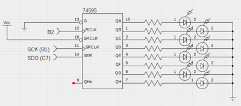

Une liaison SPI (pour Serial Peripheral Interface) est un bus de données série synchrone baptisé ainsi par Motorola, qui opère en mode Full-duplex. Les circuits communiquent selon un schéma maître-esclaves, où le maître s’occupe totalement de la communication. Plusieurs esclaves peuvent coexister sur un même bus, dans ce cas, la sélection du destinataire se fait par une ligne dédiée entre le maître et l’esclave appelée chip select (source: Wikipedia).
Dans cette partie, nous allons mettre en place une dialogue unidirectionnel entre le PIC et le 74HC595. Le 74HC595 est un composant permettant de convertir une liaison série en liaison parallèle.
Schéma de montage

On utilisera que deux broche du SPI : l’horloge SCK qui est sur le port B1 et le donnée de sortie SDO qui est sur le port C7. Le composant 74HC595 nécessite une validation des données reçu afin que celles-ci soient disponible sur les broches Qa – Qh. On utilisera le port B2 pour assurer cette validation. La broche 13 du 74HC595 sera connectée au 0V pour que les sorties soient activées, et la broche 10 sera connectée au 5V pour ne pas effectuer un effacement.
La librairie
Elle est relativement simple et ne contient que 3 fonctions :
- L’initialisation
- La lecture
- L’écriture
Le header
#ifndef SPI_H_INCLUDED
#define SPI_H_INCLUDED
// bus mode
#define SPI_MODE_00 0
#define SPI_MODE_01 1
#define SPI_MODE_10 2
#define SPI_MODE_11 3
// sync mode
#define SPI_SLAVE_MODE_WITHOUT_SS 0b0101
#define SPI_SLAVE_MODE_WITH_SS 0b0100
#define SPI_MASTER_MODE_CLOCK_TMR2 0b0011
#define SPI_MASTER_MODE_CLOCK_FOSC64 0b0010
#define SPI_MASTER_MODE_CLOCK_FOSC16 0b0001
#define SPI_MASTER_MODE_CLOCK_FOSC4 0b0000
// smp phase
#define SPI_SLEW_RATE_ENABLE 0x00
#define SPI_SLEW_RATE_DISABLE 0x80
#define SPI_STANDARD_SPEED_MODE 0x80
#define SPI_HIGH_SPEED_MODE 0x00
unsigned char spiWriteByte(char b);
unsigned char spiReadByte();
void spiInit(unsigned char sync_mode, unsigned char bus_mode, unsigned char smp_phase);
#endif // SPI_H_INCLUDED
Le code
#include "spi.h"
#include <pic18f4550.h>
/**
* Send a byte on the SPI port
*
* @param b byte to send on the SPI port
*
* @return 1 on success
*/
unsigned char spiWriteByte(char b)
{ SSPBUF = b; // send byte
if (SSPCON1bits.WCOL) { // a collision occured
return 0;
}
while (!PIR1bits.SSPIF); // wait for the transaction is completed
PIR1bits.SSPIF=0;
return 1;
}
/**
* Read a byte from SPI
*
* @return read byte
*/
unsigned char spiReadByte()
{
SSPBUF = 0x00; // initiate bus cycle
while (!SSPSTATbits.BF); // wait until cycle complete
return (SSPBUF); // return with byte read
}
/**
* Init the SPI
* ie. spiInit(SPI_MASTER_MODE_CLOCK_FOSC4, SPI_MODE_00, SPI_HIGH_SPEED_MODE)
*
* @param sync_mode Synchronization mode
* @param bus_mode Bus mode
* @param smp_phase Sample phase
*/
void spiInit(unsigned char sync_mode, unsigned char bus_mode, unsigned char smp_phase)
{
SSPSTAT &= 0x3F; // power on state
SSPCON1 = 0x00; // power on state
SSPCON1 |= sync_mode; // select SPI mode
SSPSTAT |= smp_phase; // select data input sample phase
switch (bus_mode) {
case SPI_MODE_00: // SPI bus mode 0,0
SSPCON1bits.CKP = 0; // clock idle state low
SSPSTATbits.CKE = 0; // data transmitted on rising edge
break;
case SPI_MODE_10: // SPI bus mode 1,0
SSPCON1bits.CKP = 1; // clock idle state high
SSPSTATbits.CKE = 0; // data transmitted on falling edge
break;
case SPI_MODE_11: // SPI bus mode 1,1
SSPCON1bits.CKP = 1; // clock idle state high
SSPSTATbits.CKE = 1; // data transmitted on rising edge
break;
default://SPI_MODE_01 // default SPI bus mode 0,1
SSPCON1bits.CKP = 0; // clock idle state low
SSPSTATbits.CKE = 1; // data transmitted on falling edge
break;
}
switch (sync_mode) {
case SPI_SLAVE_MODE_WITH_SS: // slave mode w /SS enable
TRISAbits.TRISA5 = 1; // define /SS pin as input
case SPI_SLAVE_MODE_WITHOUT_SS: // slave mode w/o /SS enable
TRISBbits.TRISB1 = 1; // define clock pin as input
SSPSTATbits.SMP = 0; // must be cleared in slave SPI mode
break;
default: // master mode, define clock pin as output
TRISBbits.TRISB1 = 0; // define clock pin as output
break;
}
TRISCbits.TRISC7=0; // define SDO as output (master or slave)
TRISBbits.TRISB0=1; // define SDI as input (master or slave)
SSPCON1bits.SSPEN = 1;
}
Programm d'example
#include <pic18f4550.h>
#include <delay.h>
#include "config.h"
#include "spi.h"
/*
* Connect :
* - pin B2 to PIN 12 (STCP)of 74HC595
* - pin B1(SCK) to PIN 11 (SHCP) of the 74HC595
* - pin C7 (SDO) to PIN 14 (DS) of the 74HC595
* - pin 10 (/MR) of the 74HC595 to Vcc
* - pin 13 (/OE) of the 74HC595 to Gnd
*/
void validateOutput()
{
LATBbits.LATB2=1;
LATBbits.LATB2=0;
}
int main()
{
// Initialisation du module SPI
spiInit(SPI_MASTER_MODE_CLOCK_FOSC4, SPI_MODE_01, SPI_STANDARD_SPEED_MODE);
// configuration de la gachette de validation
TRISBbits.TRISB2 = 0;
LATBbits.LATB2=0;
// boucle principale
while (1) {
delay1mtcy(10);
spiWriteByte(0xab);
validateOutput();
delay1mtcy(10);
spiWriteByte(0xae);
validateOutput();
delay1mtcy(10);
spiWriteByte(0xf0);
validateOutput();
}
}
Pour ce qui est du config.h, on utilisera celui cité dans le premier programme